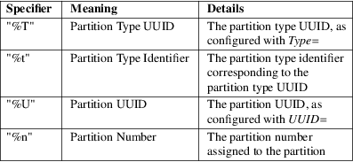

repart.d − Partition Definition Files for Automatic Boot−Time Repartitioning
/etc/repart.d/*.conf
/run/repart.d/*.conf
/usr/lib/repart.d/*.conf
repart.d/*.conf files describe basic properties of partitions of block devices of the local system. They may be used to declare types, names and sizes of partitions that shall exist. The systemd-repart(8) service reads these files and attempts to add new partitions currently missing and enlarge existing partitions according to these definitions. Operation is generally incremental, i.e. when applied, what exists already is left intact, and partitions are never shrunk, moved or deleted.
These definition files are useful for implementing operating system images that are prepared and delivered with minimally sized images (for example lacking any state or swap partitions), and which on first boot automatically take possession of any remaining disk space following a few basic rules.
Currently, support for partition definition files is only implemented for GPT partitition tables.
Partition files are generally matched against any partitions already existing on disk in a simple algorithm: the partition files are sorted by their filename (ignoring the directory prefix), and then compared in order against existing partitions matching the same partition type UUID. Specifically, the first existing partition with a specific partition type UUID is assigned the first definition file with the same partition type UUID, and the second existing partition with a specific type UUID the second partition file with the same type UUID, and so on. Any left−over partition files that have no matching existing partition are assumed to define new partition that shall be created. Such partitions are appended to the end of the partition table, in the order defined by their names utilizing the first partition slot greater than the highest slot number currently in use. Any existing partitions that have no matching partition file are left as they are.
Note that these definitions may only be used to create and initialize new partitions or to grow existing ones. In the latter case it will not grow the contained files systems however; separate mechanisms, such as systemd-growfs(8) may be used to grow the file systems inside of these partitions. Partitions may also be marked for automatic growing via the GrowFileSystem= setting, in which case the file system is grown on first mount by tools that respect this flag. See below for details.
Type=
The GPT partition type UUID to match. This may be a GPT partition type UUID such as 4f68bce3−e8cd−4db1−96e7−fbcaf984b709, or an identifier. Architecture specific partition types can use one of these architecture identifiers: alpha, arc, arm (32bit), arm64 (64bit, aka aarch64), ia64, loongarch64, mips−le, mips64−le, parisc, ppc, ppc64, ppc64−le, riscv32, riscv64, s390, s390x, tilegx, x86 (32bit, aka i386) and x86−64 (64bit, aka amd64). The supported identifiers are:
Table 1. GPT
partition type identifiers
This setting defaults to linux−generic.
Most of the partition type UUIDs listed above are defined in the Discoverable Partitions Specification [1] .
Label=
The textual label to assign to the partition if none is assigned yet. Note that this setting is not used for matching. It is also not used when a label is already set for an existing partition. It is thus only used when a partition is newly created or when an existing one had a no label set (that is: an empty label). If not specified a label derived from the partition type is automatically used. Simple specifier expansion is supported, see below.
UUID=
The UUID to assign to the partition if none is assigned yet. Note that this setting is not used for matching. It is also not used when a UUID is already set for an existing partition. It is thus only used when a partition is newly created or when an existing one had a all−zero UUID set. If set to "null", the UUID is set to all zeroes. If not specified a UUID derived from the partition type is automatically used.
Priority=
A numeric priority to assign to this partition, in the range −2147483648...2147483647, with smaller values indicating higher priority, and higher values indicating smaller priority. This priority is used in case the configured size constraints on the defined partitions do not permit fitting all partitions onto the available disk space. If the partitions do not fit, the highest numeric partition priority of all defined partitions is determined, and all defined partitions with this priority are removed from the list of new partitions to create (which may be multiple, if the same priority is used for multiple partitions). The fitting algorithm is then tried again. If the partitions still do not fit, the now highest numeric partition priority is determined, and the matching partitions removed too, and so on. Partitions of a priority of 0 or lower are never removed. If all partitions with a priority above 0 are removed and the partitions still do not fit on the device the operation fails. Note that this priority has no effect on ordering partitions, for that use the alphabetical order of the filenames of the partition definition files. Defaults to 0.
Weight=
A numeric weight to assign to this partition in the range 0...1000000. Available disk space is assigned the defined partitions according to their relative weights (subject to the size constraints configured with SizeMinBytes=, SizeMaxBytes=), so that a partition with weight 2000 gets double the space as one with weight 1000, and a partition with weight 333 a third of that. Defaults to 1000.
The Weight= setting is used to distribute available disk space in an "elastic" fashion, based on the disk size and existing partitions. If a partition shall have a fixed size use both SizeMinBytes= and SizeMaxBytes= with the same value in order to fixate the size to one value, in which case the weight has no effect.
PaddingWeight=
Similar to Weight=, but sets a weight for the free space after the partition (the "padding"). When distributing available space the weights of all partitions and all defined padding is summed, and then each partition and padding gets the fraction defined by its weight. Defaults to 0, i.e. by default no padding is applied.
Padding is useful if empty space shall be left for later additions or a safety margin at the end of the device or between partitions.
SizeMinBytes=, SizeMaxBytes=
Specifies minimum and maximum size constraints in bytes. Takes the usual K, M, G, T, ... suffixes (to the base of 1024). If SizeMinBytes= is specified the partition is created at or grown to at least the specified size. If SizeMaxBytes= is specified the partition is created at or grown to at most the specified size. The precise size is determined through the weight value configured with Weight=, see above. When SizeMinBytes= is set equal to SizeMaxBytes= the configured weight has no effect as the partition is explicitly sized to the specified fixed value. Note that partitions are never created smaller than 4096 bytes, and since partitions are never shrunk the previous size of the partition (in case the partition already exists) is also enforced as lower bound for the new size. The values should be specified as multiples of 4096 bytes, and are rounded upwards (in case of SizeMinBytes=) or downwards (in case of SizeMaxBytes=) otherwise. If the backing device does not provide enough space to fulfill the constraints placing the partition will fail. For partitions that shall be created, depending on the setting of Priority= (see above) the partition might be dropped and the placing algorithm restarted. By default a minimum size constraint of 10M and no maximum size constraint is set.
PaddingMinBytes=, PaddingMaxBytes=
Specifies minimum and maximum size constraints in bytes for the free space after the partition (the "padding"). Semantics are similar to SizeMinBytes= and SizeMaxBytes=, except that unlike partition sizes free space can be shrunk and can be as small as zero. By default no size constraints on padding are set, so that only PaddingWeight= determines the size of the padding applied.
CopyBlocks=
Takes a path to a regular file, block device node or directory, or the special value "auto". If specified and the partition is newly created, the data from the specified path is written to the newly created partition, on the block level. If a directory is specified, the backing block device of the file system the directory is on is determined, and the data read directly from that. This option is useful to efficiently replicate existing file systems onto new partitions on the block level — for example to build a simple OS installer or an OS image builder.
If the special value "auto" is specified, the source to copy from is automatically picked up from the running system (or the image specified with −−image= — if used). A partition that matches both the configured partition type (as declared with Type= described above), and the currently mounted directory appropriate for that partition type is determined. For example, if the partition type is set to "root" the partition backing the root directory (/) is used as source to copy from — if its partition type is set to "root" as well. If the declared type is "usr" the partition backing /usr/ is used as source to copy blocks from — if its partition type is set to "usr" too. The logic is capable of automatically tracking down the backing partitions for encrypted and Verity−enabled volumes. "CopyBlocks=auto" is useful for implementing "self−replicating" systems, i.e. systems that are their own installer.
The file specified here must have a size that is a multiple of the basic block size 512 and not be empty. If this option is used, the size allocation algorithm is slightly altered: the partition is created as least as big as required to fit the data in, i.e. the data size is an additional minimum size value taken into consideration for the allocation algorithm, similar to and in addition to the SizeMin= value configured above.
This option has no effect if the partition it is declared for already exists, i.e. existing data is never overwritten. Note that the data is copied in before the partition table is updated, i.e. before the partition actually is persistently created. This provides robustness: it is guaranteed that the partition either doesn't exist or exists fully populated; it is not possible that the partition exists but is not or only partially populated.
This option cannot be combined with Format= or CopyFiles=.
Format=
Takes a file system name, such as "ext4", "btrfs", "xfs", "vfat", "erofs", "squashfs" or the special value "swap". If specified and the partition is newly created it is formatted with the specified file system (or as swap device). The file system UUID and label are automatically derived from the partition UUID and label. If this option is used, the size allocation algorithm is slightly altered: the partition is created as least as big as required for the minimal file system of the specified type (or 4KiB if the minimal size is not known).
This option has no effect if the partition already exists.
Similarly to the behaviour of CopyBlocks=, the file system is formatted before the partition is created, ensuring that the partition only ever exists with a fully initialized file system.
This option cannot be combined with CopyBlocks=.
CopyFiles=
Takes a pair of colon separated absolute file system paths. The first path refers to a source file or directory on the host, the second path refers to a target in the file system of the newly created partition and formatted file system. This setting may be used to copy files or directories from the host into the file system that is created due to the Format= option. If CopyFiles= is used without Format= specified explicitly, "Format=" with a suitable default is implied (currently "ext4", but this may change in the future). This option may be used multiple times to copy multiple files or directories from host into the newly formatted file system. The colon and second path may be omitted in which case the source path is also used as the target path (relative to the root of the newly created file system). If the source path refers to a directory it is copied recursively.
This option has no effect if the partition already exists: it cannot be used to copy additional files into an existing partition, it may only be used to populate a file system created anew.
The copy operation is executed before the file system is registered in the partition table, thus ensuring that a file system populated this way only ever exists fully initialized.
Note that CopyFiles= will skip copying files that aren't supported by the target filesystem (e.g symlinks, fifos, sockets and devices on vfat). When an unsupported file type is encountered, repart will skip copying this file and write a log message about it.
Note that systemd−repart does not change the UIDs/GIDs of any copied files and directories. When running systemd−repart as an unprivileged user to build an image of files and directories owned by the same user, you can run systemd−repart in a user namespace with the current user mapped to the root user to make sure the files and directories in the image are owned by the root user.
Note that when populating XFS filesystems with systemd−repart and loop devices are not available, populating XFS filesystems with files containing spaces, tabs or newlines will fail due to limitations of mkfs.xfs's protofile format.
This option cannot be combined with CopyBlocks=.
When systemd-repart(8) is invoked with the −−image= or −−root= command line switches the source paths specified are taken relative to the specified root directory or disk image root.
MakeDirectories=
Takes one or more absolute paths, separated by whitespace, each declaring a directory to create within the new file system. Behaviour is similar to CopyFiles=, but instead of copying in a set of files this just creates the specified directories with the default mode of 0755 owned by the root user and group, plus all their parent directories (with the same ownership and access mode). To configure directories with different ownership or access mode, use CopyFiles= and specify a source tree to copy containing appropriately owned/configured directories. This option may be used more than once to create multiple directories. When CopyFiles= and MakeDirectories= are used together the former is applied first. If a directory listed already exists no operation is executed (in particular, the ownership/access mode of the directories is left as is).
The primary usecase for this option is to create a minimal set of directories that may be mounted over by other partitions contained in the same disk image. For example, a disk image where the root file system is formatted at first boot might want to automatically pre−create /usr/ in it this way, so that the "usr" partition may over−mount it.
Consider using systemd-tmpfiles(8) with its −−image= option to pre−create other, more complex directory hierarchies (as well as other inodes) with fine−grained control of ownership, access modes and other file attributes.
Encrypt=
Takes one of "off", "key−file", "tpm2" and "key−file+tpm2" (alternatively, also accepts a boolean value, which is mapped to "off" when false, and "key−file" when true). Defaults to "off". If not "off" the partition will be formatted with a LUKS2 superblock, before the blocks configured with CopyBlocks= are copied in or the file system configured with Format= is created.
The LUKS2 UUID is automatically derived from the partition UUID in a stable fashion. If "key−file" or "key−file+tpm2" is used, a key is added to the LUKS2 superblock, configurable with the −−key−file= option to systemd−repart. If "tpm2" or "key−file+tpm2" is used, a key is added to the LUKS2 superblock that is enrolled to the local TPM2 chip, as configured with the −−tpm2−device= and −−tpm2−pcrs= options to systemd−repart.
When used this slightly alters the size allocation logic as the implicit, minimal size limits of Format= and CopyBlocks= are increased by the space necessary for the LUKS2 superblock (see above).
This option has no effect if the partition already exists.
Verity=
Takes one of "off", "data", "hash" or "signature". Defaults to "off". If set to "off" or "data", the partition is populated with content as specified by CopyBlocks= or CopyFiles=. If set to "hash", the partition will be populated with verity hashes from the matching verity data partition. If set to "signature", the partition will be populated with a JSON object containing a signature of the verity root hash of the matching verity hash partition.
A matching verity partition is a partition with the same verity match key (as configured with VerityMatchKey=).
If not explicitly configured, the data partition's UUID will be set to the first 128 bits of the verity root hash. Similarly, if not configured, the hash partition's UUID will be set to the final 128 bits of the verity root hash. The verity root hash itself will be included in the output of systemd−repart.
This option has no effect if the partition already exists.
Usage of this option in combination with Encrypt= is not supported.
For each unique VerityMatchKey= value, a single verity data partition ("Verity=data") and a single verity hash partition ("Verity=hash") must be defined.
VerityMatchKey=
Takes a short, user−chosen identifier string. This setting is used to find sibling verity partitions for the current verity partition. See the description for Verity=.
FactoryReset=
Takes a boolean argument. If specified the partition is marked for removal during a factory reset operation. This functionality is useful to implement schemes where images can be reset into their original state by removing partitions and creating them anew. Defaults to off.
Flags=
Configures the 64bit GPT partition flags field to set for the partition when creating it. This option has no effect if the partition already exists. If not specified the flags values is set to all zeroes, except for the three bits that can also be configured via NoAuto=, ReadOnly= and GrowFileSystem=; see below for details on the defaults for these three flags. Specify the flags value in hexadecimal (by prefixing it with "0x"), binary (prefix "0b") or decimal (no prefix).
NoAuto=, ReadOnly=, GrowFileSystem=
Configures the No−Auto, Read−Only and Grow−File−System partition flags (bit 63, 60 and 59) of the partition table entry, as defined by the Discoverable Partitions Specification [1] . Only available for partition types supported by the specification. This option is a friendly way to set bits 63, 60 and 59 of the partition flags value without setting any of the other bits, and may be set via Flags= too, see above.
If Flags= is used in conjunction with one or more of NoAuto=/ReadOnly=/GrowFileSystem= the latter control the value of the relevant flags, i.e. the high−level settings NoAuto=/ReadOnly=/GrowFileSystem= override the relevant bits of the low−level setting Flags=.
Note that the three flags affect only automatic partition mounting, as implemented by systemd-gpt-auto-generator(8) or the −−image= option of various commands (such as systemd-nspawn(1)). It has no effect on explicit mounts, such as those done via mount(8) or fstab(5).
If both bit 50 and 59 are set for a partition (i.e. the partition is marked both read−only and marked for file system growing) the latter is typically without effect: the read−only flag takes precedence in most tools reading these flags, and since growing the file system involves writing to the partition it is consequently ignored.
NoAuto= defaults to off. ReadOnly= defaults to on for Verity partition types, and off for all others. GrowFileSystem= defaults to on for all partition types that support it, except if the partition is marked read−only (and thus effectively, defaults to off for Verity partitions).
SplitName=
Configures the suffix to append to split artifacts when the −−split option of systemd−repart is used. Simple specifier expansion is supported, see below. Defaults to "%t". To disable split artifact generation for a partition, set SplitName= to "−".
Minimize=
Takes one of "off", "best", and "guess" (alternatively, also accepts a boolean value, which is mapped to "off" when false, and "best" when true). Defaults to "off". If set to "best", the partition will have the minimal size required to store the sources configured with CopyFiles=. "best" is currently only supported for read−only filesystems. If set to "guess", the partition is created at least as big as required to store the sources configured with CopyFiles=. Note that unless the filesystem is a read−only filesystem, systemd−repart will have to populate the filesystem twice to guess the minimal required size, so enabling this option might slow down repart when populating large partitions.
Specifiers may be used in the Label=, CopyBlocks=, CopyFiles=, MakeDirectories=, SplitName= settings. The following expansions are understood:
Table 2. Specifiers
available
Additionally, for the SplitName= setting, the
following specifiers are also understood:
Table 3. Specifiers available

Example 1. Grow the root partition to the full disk size at first boot
With the following file the root partition is automatically grown to the full disk if possible during boot.
#
/usr/lib/repart.d/50−root.conf
[Partition]
Type=root
Example 2. Create a swap and home partition automatically on boot, if missing
The home partition gets all available disk space while the swap partition gets 1G at most and 64M at least. We set a priority > 0 on the swap partition to ensure the swap partition is not used if not enough space is available. For every three bytes assigned to the home partition the swap partition gets assigned one.
#
/usr/lib/repart.d/60−home.conf
[Partition]
Type=home
#
/usr/lib/repart.d/70−swap.conf
[Partition]
Type=swap
SizeMinBytes=64M
SizeMaxBytes=1G
Priority=1
Weight=333
Example 3. Create B partitions in an A/B Verity setup, if missing
Let's say the vendor intends to update OS images in an A/B setup, i.e. with two root partitions (and two matching Verity partitions) that shall be used alternatingly during upgrades. To minimize image sizes the original image is shipped only with one root and one Verity partition (the "A" set), and the second root and Verity partitions (the "B" set) shall be created on first boot on the free space on the medium.
#
/usr/lib/repart.d/50−root.conf
[Partition]
Type=root
SizeMinBytes=512M
SizeMaxBytes=512M
#
/usr/lib/repart.d/60−root−verity.conf
[Partition]
Type=root−verity
SizeMinBytes=64M
SizeMaxBytes=64M
The definitions above cover the "A" set of root partition (of a fixed 512M size) and Verity partition for the root partition (of a fixed 64M size). Let's use symlinks to create the "B" set of partitions, since after all they shall have the same properties and sizes as the "A" set.
#
ln −s 50−root.conf
/usr/lib/repart.d/70−root−b.conf
# ln −s 60−root−verity.conf
/usr/lib/repart.d/80−root−verity−b.conf
Example 4. Create a data and verity partition from a OS tree
Assuming we have an OS tree at /var/tmp/os−tree that we want to package in a root partition together with a matching verity partition, we can do so as follows:
#
50−root.conf
[Partition]
Type=root
CopyFiles=/var/tmp/os−tree
Verity=data
VerityMatchKey=root
#
60−root−verity.conf
[Partition]
Type=root−verity
Verity=hash
VerityMatchKey=root
systemd(1), systemd-repart(8), sfdisk(8), systemd-cryptenroll(1)
|
1. |
Discoverable Partitions Specification |
https://uapi-group.org/specifications/specs/discoverable_partitions_specification